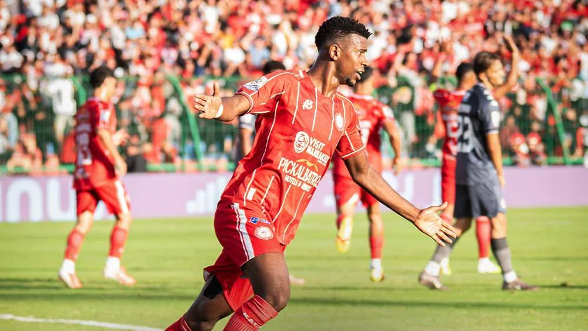
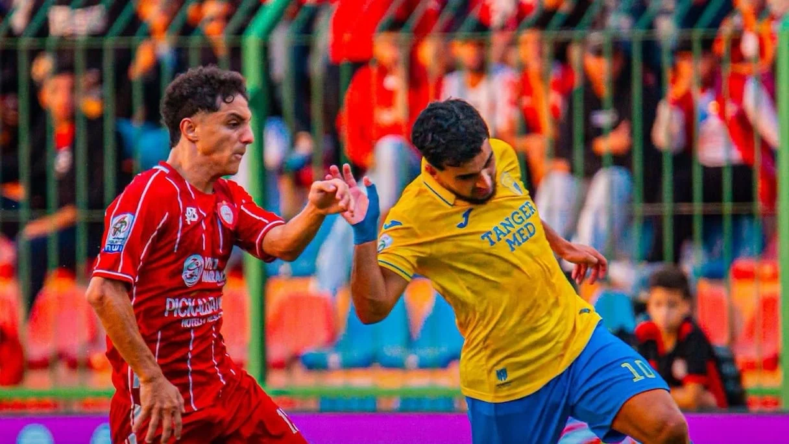
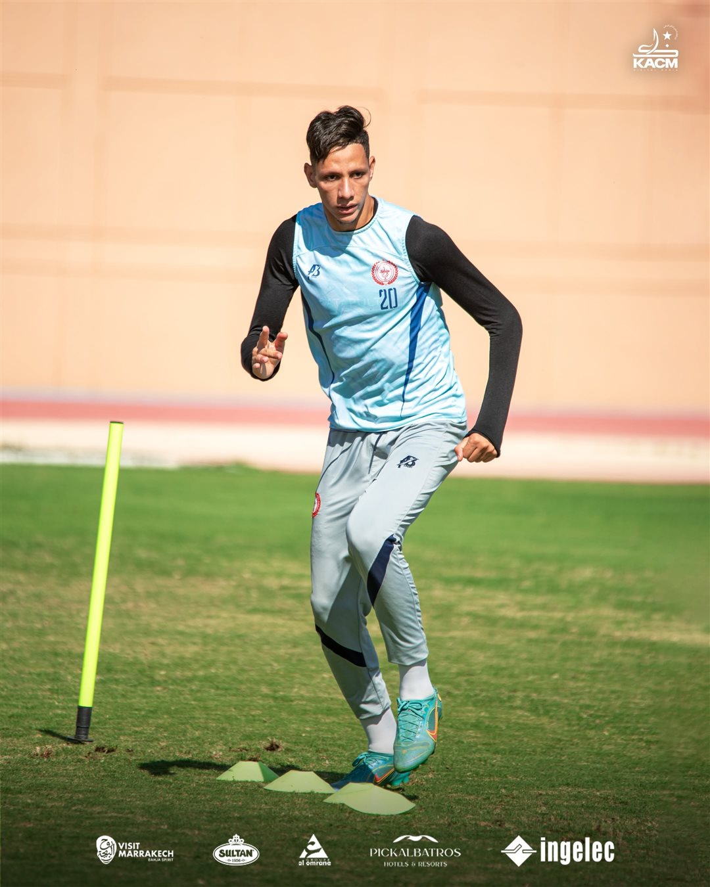

Média
KACM TV
Vidéos

7 novembre 2026KACM 2–1 WydadRésumé de la rencontre de la 7ᵉ journée de Botola Pro.Regarder le résumé ↗
10 octobre 2026KACM 2–1 Ittihad TangerReplay de la troisième journée de Botola Pro.Accéder au replay ↗
YouTubeLa chaîne du KawkabToutes les vidéos disponibles sur la chaîne KACM TV.Voir toutes les vidéos ↗Galerie
Photos du Kawkab
Certaines photos proviennent d’archives et de la presse ; elles sont affichées dans leur définition disponible.
Presse & communiqués